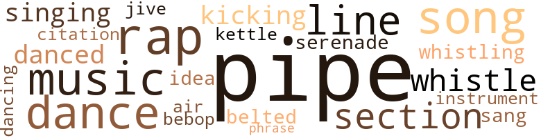
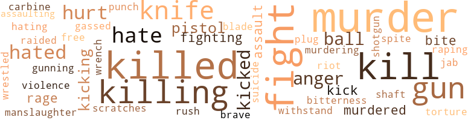

Room to Swing, by Lacy, Ed (1957)
89 music-related terms matched in this text.
Most frequent terms in this topic: pipe (39); song (5); music (5); rap (4); line (4)
belt_out.v.01
Definition: sing loudly and forcefully
| word | sentence |
|---|---|
| belted | I had belted a white cop , and I was in this strange little Jim Crow town , with a few bucks , wasting precious time being philosophical about a lousy farm . |
bop.n.02
Definition: an early form of modern jazz (originating around 1940)
| word | sentence |
|---|---|
| bebop | Ted and I got our coats while Bobby slipped into a tailored cloth coat and bebop cap , which did n't look at all mannish on her . |
dance.n.01
Definition: an artistic form of nonverbal communication
| word | sentence |
|---|---|
| dances | Staying up all night at dances , holding up drunks , getting vomited on ? |
| dances | " And what the devil is living in a swank apartment , joining these dicty social clubs , the drunken dances , but a front ? |
| dances | Bouncer at dances , stuff like that . " |
| dance | As I turned to face him this bag of bones nailed me on the chin with a wild right that sent my legs into a rubbery dance . |
| dances | And next month you 're bouncing drunks at dances for pennies . |
dance.v.03
Definition: skip, leap, or move up and down or sideways
| word | sentence |
|---|---|
| danced | After another round of drinks I danced with Barbara and noticed she was wearing a wedding ring like Kay 's . |
| danced | The crazy thing was , her breasts danced as I shook her and yet a hard voice , almost a man 's voice , barked , " Get your damn hands off me ! |
| dancing | The wallpaper was a mess of big roses and little cupids dancing around , the chandelier was a clumsy affair of cut glass , the furniture was all stuffed plush and leather chairs , with a narrow four-poster bed in one corner . |
kettle.n.04
Definition: a large hemispherical brass or copper percussion instrument with a drumhead that can be tuned by adjusting the tension on it
| word | sentence |
|---|---|
| kettle | Bobby had a kettle boiling in the fireplace and served hot rums . |
kick.v.04
Definition: kick a leg up
| word | sentence |
|---|---|
| kicking | There 's no point in kicking each other . |
| kicking | Because I ai n't doing anything about you kicking a cop does n't mean we 're forgetting it . " |
music.n.01
Definition: an artistic form of auditory communication incorporating instrumental or vocal tones in a structured and continuous manner
| word | sentence |
|---|---|
| music | We ate listening to radio music and I was mixed up . |
| music | I heard music and voices in the background as she answered . |
| music | We listened to the music for a while . |
| music | The music beat must get into your blood , I suppose , like an electric current . " |
| music | Both Ollie and Roy are younger than I , and over the weekend the place is full of girls and music . |
musical_instrument.n.01
Definition: any of various devices or contrivances that can be used to produce musical tones or sounds
| word | sentence |
|---|---|
| instrument | " What 's your instrument and what band are you with ? " |
phrase.n.02
Definition: a short musical passage
| word | sentence |
|---|---|
| phrase | I had n't heard that phrase since I read The Scarlet Letter in high-school lit and was disappointed that it was n't hot stuff . |
pipe.n.04
Definition: a tubular wind instrument
| word | sentence |
|---|---|
| pipe | I was sitting on the couch , lighting my pipe , when Sybil stepped out in a long lacy nothing , modeling it for my benefit . |
| pipe | She came over , tipping like a Maltese kitten , sat on my lap , gently pulled the pipe from my mouth and planted a long hot kiss . |
| pipe | I puffed on my pipe hard . |
| pipe | I got my pipe going . |
| pipe | I smoked through another pipe , thinking of Sybil , trying to clarify my thoughts about her , about us . |
| pipe | As Kay lit her pipe and sat on the floor , the writer nibbled at a blackened bit of potato and said , " I ca n't bear to listen to her because it galls me to remember how she died , bleeding to death and they would n't take her in a white hospital . |
| pipe | Finally , as Kay finished a speech and stopped to pack her pipe , Steve popped his eyes at me and asked , " " Touie , do n't you believe the Negro would do better with a complete population transfer to the North ? " |
| pipe | She was angry , almost slammed her pipe on the table . |
| pipe | Bobby did n't want Kay to take her pipe . " |
| pipe | I 'd hardly got my pipe going when two clowns rushed over to the Jag , said , " Touie ! |
| pipe | I lit my pipe and waited in the narrow hallway , neither of us talking . |
| pipe | My wash was dry and I got my pipe working as I dressed . |
| pipe | We were both sweating and puffing and I wiped my face , got my pipe going . |
| pipe | " The papers said he was a rough character , " I said , stopping to relight my pipe , pack it down - stalling before we reached the house . |
| pipe | I lit my pipe and thought what an odd place Bingston was - South and yet not really South . |
| pipe | I took out my pipe , lit it . |
| pipe | I was carrying a hunk of pipe in my pocket to beat his brains out . |
| pipe | I stood there for a moment , fit my pipe . |
| pipe | I pointed to my pipe sticking out of my breast pocket as I got a match working . |
| pipe | Kay broke away from Bobby , took her pipe out of a pocket in the Chinese coat , calmly lit it as Ted 's eyes got large . |
| pipe | Kay touched her hair again , nodding as she puffed on her pipe . |
| pipe | Like somebody in a hammy play , she puffed on her pipe for a moment , and the silence in the room seemed ready to explode . |
| pipe | We all know why the cops may want to beat him up , and I have a better idea , Kay said , knocking the ashes out of her jeweled pipe . |
| pipe | I relit my pipe slowly , careful not to look at her legs , asked , " Are you in need of a private detective ? " |
| pipe | She took a whiff of my pipe smoke , said , " Lovely spicy odor . |
| pipe | She pulled a tiny jeweled pipe out of her bag and I pushed my tobacco pouch across the desk without batting an eye . |
| pipe | Sucking on her little pipe she said , " This is nice . |
| pipe | She even glance ^ at my books , then sat down again , openly staring at me over her pipe . |
| pipe | She knocked the ashes out of her pipe and took a deep breath . |
| pipe | I puffed on my pipe and looked at the sheet ; the opening odds on Fast Bunny were 6 to 1 . |
| pipe | We finished our beers and Miss Robbens pulled the string - she had to smoke her pipe . |
| pipe | Knocking the ashes out of her pipe , she squeezed my hand , whispered , " A magnificent bit . " |
| pipe | I was about to add she had a pipe , she did n't need me and the pipe to attract attention . |
| pipe | I was about to add she had a pipe , she did n't need me and the pipe to attract attention . |
| pipe | I leaned against the window of a small coffeepot , packing my pipe . |
| pipe | I felt silly but as I lit my pipe she said in a fierce hammy whisper , " He 's the one in the blue sweat shirt . |
| pipe | I stood in the lobby of a building , smoking my pipe and watching Thomas until he went back to work at twelve forty-five . |
| pipe | I drove down to Canal Street and parked outside the phone building , lit my pipe . |
| pipe | I mean driving along the Hudson in my Jag , a fine-looking chick beside me , I really felt like a success boy . . . until I was kidding about Miss Robbens ' pipe . |
quotation.n.02
Definition: a passage or expression that is quoted or cited
| word | sentence |
|---|---|
| citation | " They gave me a citation for wearing out my gums saying ' sir . ' |
rap.n.05
Definition: genre of African-American music of the 1980s and 1990s in which rhyming lyrics are chanted to a musical accompaniment; several forms of rap have emerged
| word | sentence |
|---|---|
| rap | They 'd beat me crazy in the station house before I was even arraigned on the murder rap . |
| rap | Kay framed me , set me up for this rap . " |
| raps | I mean , friendship does n't go for murder raps . |
| rap | With what we 're stepping into , a Sullivan Law rap wo n't matter much . |
| rap | However , from the second his ' wanted ' flyer is flashed on TV screens , you 're to tail him twenty-four hours a day - until we rap him , which will be - " " Until you do what ? " |
| Rap | " Rap him , send him up . |
section.n.01
Definition: a self-contained part of a larger composition (written or musical)
| word | sentence |
|---|---|
| section | You 'll be in the colored section . |
| section | In fact most of the houses in this " Negro " section looked pretty good . |
| section | In New York I could get a - room in the colored section of Brooklyn , or the Bronx - although I did n't have much money , in fact no money if I took a train back to New York . |
serenade.n.02
Definition: a song characteristically played outside the house of a woman
| word | sentence |
|---|---|
| serenade | There was a set of penciled instructions pasted next to the bell outside this ancient private house : ring one for Flatts , two for Adams , and a Stewart - probably on the top floor - got a serenade of ten bells . |
sing.v.02
Definition: produce tones with the voice
| word | sentence |
|---|---|
| sang | She sang a torch song - off key . |
singing.n.01
Definition: the act of singing vocal music
| word | sentence |
|---|---|
| singing | I ate slowly , listening to the weird singing , glanced around the table . |
| singing | I was singing as I raced back to the Davis house . |
song.n.01
Definition: a short musical composition with words
| word | sentence |
|---|---|
| song | She sang a torch song - off key . |
| song | After the second song it got to me , or maybe I was getting a little high . |
| song | One thing was for sure , as the song says , when you leave Manhattan you 're not going anyplace . |
| song | They made a recording of her doing a song , said she 'd be on TV screens all over the country . |
| song | I tried to think of the right words and all I could think of was a line from a song : you always hurt the one you love . . . . |
swing.n.05
Definition: a style of jazz played by big bands popular in the 1930s; flowing rhythms but less complex than later styles of jazz
| word | sentence |
|---|---|
| jive | " Honey , why do n't you cut the phony jive talk ? " |
theme.n.03
Definition: (music) melodic subject of a musical composition
| word | sentence |
|---|---|
| idea | Sure , this joker had been hunting for Thomas for years , and the TV idea gives him his lead . |
tune.n.01
Definition: a succession of notes forming a distinctive sequence
| word | sentence |
|---|---|
| line | Steve slipped me a line about writing the jazz novel someday . |
| line | The second the gun was out of line with my face , with reflex action , my left shot out and grabbed his gun hand by the wrist . |
| air | I 'm having a part sent here air mail . " |
| line | Her mouth was a pretty , thick red line , and the dashboard light did things to the high cheekbones , lighting the skin to a delicious brown . |
| line | Red snickered and he and his pal laughed too loudly at something which had as a tag line " . |
whistle.v.01
Definition: make whistling sounds
| word | sentence |
|---|---|
| whistle | I 'd forgotten the dumb fight in the coffeepot , even about blowing the whistle on Thomas . |
| whistling | Dressing quickly in slacks and an old sweat shirt , I was parked on Thomas ' block when he came out at 7:35 a.m. I followed him to Twenty-third Street , where he stopped for breakfast , and at 8:21 a.m. I watched him enter the freight-company building , whistling cheerfully . |
| whistle | I was a prize dummy - there was somebody else in on the Thomas publicity deal I had n't even thought ofl Kay had said something about having a " stooge planted " to blow the whistle on Thomas after his case appeared on TV . |
| whistle | The real relief I saw on both their faces was a shot in the arm - neither Kay nor Bobby had blown the whistle on me . |
193 violence-related terms matched in this text.
Most frequent terms in this topic: murder (25); killed (20); fight (19); kill (17); killing (13)
abrasion.n.01
Definition: an abraded area where the skin is torn or worn off
| word | sentence |
|---|---|
| scratches | The writer 's wife licked her lips , as if she were about to take a bite out of me , kicked the ball off with " I simply love Bessie Smith records , but they were so badly pressed ; all the scratches come through on our hi-fi . " |
anger.n.01
Definition: a strong emotion; a feeling that is oriented toward some real or supposed grievance
| word | sentence |
|---|---|
| anger | You said something and I answered you , " I said , crawling slightly , all the anger I 'd felt at Mrs. James welling up in me . |
| anger | In a moment of anger anything can happen . " |
| anger | He did n't say a word , stood there very straight , his face a mixture of pain and anger . |
| anger | A darker anger flooded his brown face at " Uncle . " |
assail.v.01
Definition: attack someone physically or emotionally
| word | sentence |
|---|---|
| assaulting | On the third week of the show we will use the case of Robert Thomas , wanted by the Ohio police for raping and assaulting a poor sixteen-year-old kid . |
bang.n.04
Definition: the swift release of a store of affective force
| word | sentence |
|---|---|
| rush | He was in a big rush . |
brawl.n.02
Definition: a noisy fight in a crowd
| word | sentence |
|---|---|
| free-for-all | In a ring maybe Willie might take me but in a free-for-all I was too much for him . |
carbine.n.01
Definition: light automatic rifle
| word | sentence |
|---|---|
| carbine | I never had much use for pistols ; the war had taught me to love a carbine . |
defy.v.01
Definition: resist or confront with resistance
| word | sentence |
|---|---|
| withstand | His oily hair was plastered on his big dome under a stocking cap , and the wool plaid shirt and dungarees he wore must have been made of iron - to withstand the strain of his fat . |
fight.n.05
Definition: a boxing or wrestling match
| word | sentence |
|---|---|
| fight | " The name is Touie , as you very well know , " Barbara said , carrying on some fight of her own with this Steve . |
| fight | I 'd forgotten the dumb fight in the coffeepot , even about blowing the whistle on Thomas . |
| fight | I found a parking space over on Ninth Avenue and walked back to take a plant across the street from the cafeteria , telling myself I was a dummy to talk to the cop ; if he saw me now it might start another verbal fight . |
| fights | After I washed the dishes we drank the beer and watched TV , then played gin while waiting for the fights to come on . |
| fight | Now my mind was clear and racing - the cops would learn about the fight in the coffeepot when they checked at the school , the beat cop in Brooklyn would remember me , so would the fat cop who wanted to give me a ticket at suppertime . |
| fight | White people are nuts but I 'd be even crazier if I got into a fight about it - now . |
| fight | He was one of the few whites who helped us in the fight to sit in the orchestra of the movie house . |
| fight | Could have had a fight with his girl friend and she conked him ? |
| fight | Suppose he had crossed the TV people , tried shaking Thomas down , and it had ended in a fight ? |
| fight | But a few of us try to raise some sand - we 've just won a two-year fight to sit in the orchestra of the movie house instead of the balcony . |
| fight | " Who else did Porky ever have a serious fight with ? |
| fight | If Ted backed out it would n't be much of a fight tying him up for the night , then doing the obvious - beating the truth out of Steve . |
| fight | If we should be stopped by the cops , do n't run for it or put up a fight . |
| fight | Perhaps Thomas caught him snooping and put up a fight . |
| fight | " That fight bit does n't fit , Steve . |
| fight | He blew his lid , there was a fight . . . . |
fight.v.02
Definition: fight against or resist strongly
| word | sentence |
|---|---|
| fight | Kay said , " Certainly , despite the various forms of discrimination found up here , the Negro would have a better chance , a legal chance , to fight for his rights . " |
| fighting | He did n't have a chance to fire at the ceiling : he crumpled in a heap on the floor , moaning , his heavy mouth open wide , fighting for air . |
| fight | " We did n't have to fight for integration here - this is n't really ' South . ' |
| fight | " You mean do we fight back ? |
| fight | That 's what kills me ; we have to fight for a lousy job selling cakes . |
| fighting | I gave her a best grin , added , " We 're fighting over nothing . |
fury.n.01
Definition: a feeling of intense anger
| word | sentence |
|---|---|
| rage | His voice was shrill , his white face working with rage as he stepped toward me . |
| rage | I can tell them how you grew tired of your Bobby and tried going with me , but you 're in a rage to realize you 're so much a Lesbian now you ca n't have a normal relationship with a man . " |
gas.v.01
Definition: attack with gas; subject to gas fumes
| word | sentence |
|---|---|
| gassed | I gassed around Hollywood for a time , could n't get in . |
gun.n.01
Definition: a weapon that discharges a missile at high velocity (especially from a metal tube or barrel)
| word | sentence |
|---|---|
| gun | Truman Capote with a gun . " |
| gun | " A person tries to live decent , get a little joy out of life and - " " A punk sticking somebody up with a gun can say the same thing . " |
| gun | He was n't expecting a body but when he saw the bloody bed his gun flew out of his heavy blue overcoat pocket like his hand was on springs . |
| gun | Within striking distance , he raised his gun to whip my head . |
| gun | The second the gun was out of line with my face , with reflex action , my left shot out and grabbed his gun hand by the wrist . |
| gun | The second the gun was out of line with my face , with reflex action , my left shot out and grabbed his gun hand by the wrist . |
| gun | There was n't any doubt as to why he was coming ; his gun was loose in its holster and he was actually holding a billy in his right hand . |
| gun | I could see her using a gun but not getting close enough to bust his head . |
| gun | A jerk behind a wheel is more dangerous than if he had a gun . |
| gun | Carrying a gun ? " |
| guns | bent over the small office safe , opened it , and took out two guns . |
| gun | But I kept telling myself he would have thrown a gun on me right now if he was crossing me . |
| gun | Target . . . I 'd forgotten something . . . Ted 's gun . |
gun.v.01
Definition: shoot with a gun
| word | sentence |
|---|---|
| gunning | Perhaps he 'd just located Thomas , or maybe been released from a pen a couple days ago , went gunning for Thomas . |
hate.v.01
Definition: dislike intensely; feel antipathy or aversion towards
| word | sentence |
|---|---|
| hate | God , I hate sloppy females . " |
| hating | Mrs. James stared at me with sullen eyes , hating my guts , my good clothes . |
| hate | She had her hair up in curlers , which I hate , but otherwise she was in a good mood , did n't even mention the P.O. once . |
| hated | Look , can you remember anybody Thomas ran around with , or anybody who hated him ? " |
| hate | I did , he was such a mean cuss , but I do n't think most people paid enough attention to him to hate Porky . |
| hate | Do you know anybody here who might have reason to hate him ? " |
| hated | He was forgotten more than hated . " |
| hate | But I hate violence - for any reason , " Tim said . |
| hated | Is there anybody else who hated him ? " |
| hated | " Sam Guy never hated him . |
| hated | The other thing I remember was a beefy cop with captain 's gold bars on his shoulders , a hard-featured face and eyes that said they hated my brown skin , telling me , " Do n't think you were such a hot-shot detective , Moore . |
| hate | I hate to be mistaken for these clowns who spend every free minute polishing their cars , take better care of them than they do of themselves . |
injury.n.01
Definition: any physical damage to the body caused by violence or accident or fracture etc.
| word | sentence |
|---|---|
| hurt | " I 'm certainly not going to chance her getting hurt or involved in - " " Be still , Butch . |
jab.n.02
Definition: a quick short straight punch
| word | sentence |
|---|---|
| jab | That hit me like a jab to the gut . |
kick.v.04
Definition: kick a leg up
| word | sentence |
|---|---|
| kicking | There 's no point in kicking each other . |
| kicking | Because I ai n't doing anything about you kicking a cop does n't mean we 're forgetting it . " |
kick_back.v.02
Definition: spring back, as from a forceful thrust
| word | sentence |
|---|---|
| kick | The pain made Thomas double over and when he tried to kick back at me I pulled him up sharply , then let go suddenly . |
| kicked | The writer 's wife licked her lips , as if she were about to take a bite out of me , kicked the ball off with " I simply love Bessie Smith records , but they were so badly pressed ; all the scratches come through on our hi-fi . " |
| kicked | I kicked his right boot above the ankle hard as I could . |
| kicked | As he howled and bent over to grab his right leg , I kicked the left ankle out from under and he sat down hard , moaning , trying not to scream . |
| kicked | I 've kicked a few men in the right place before , " Kay said . |
| kicks | She did n't have to say she was enjoying herself , that being in a Negro 's office was kicks to her . |
| kicking | A bug with a large drug company and a top advertising budget , so we 've been kicking this crime-detective format around for a long time . |
kill.v.10
Definition: cause the death of, without intention
| word | sentence |
|---|---|
| kill | " I 'll kill you ! " he said , the phony drawl gone from his voice . |
| kill | When I drove her to 126th Street I had a couple of hours to kill , considered taking a swim at the Y , then decided I might as well do some work for Ted Bailey . |
| killed | Judging by the wetness of the blood , Thomas had been killed ten or fifteen minutes before I got there . |
| killing | Somehow I could n't picture Kay killing him like that , not bashing his head with the pliers . |
| killed | The guy Kay hired me to watch , he 's been killed . |
| killed | But I 'm going to find Kay , get the truth out of her if it 's the - " " Are you saying Kay killed this man ? " |
| killed | I did n't rule Kay off the list , not till I knew where she 'd been when Thomas was killed . |
| kill | I could n't see Bobby having the guts to kill . |
| kill | I truly do n't believe you would kill a person . " |
| killed | " Ole Porky got hisself killed ? |
| killed | Harry said , " Mr. Jones here says he read that old Porky Thomas was killed . |
| killing | Suppose I 'd let him take me in , told my story - after all , what motive did I have for killing the jerk ? |
| kill | Hell , they could say I was sore at Thomas for that coffeepot stuff , came back to kill him . |
| killed | I was reading the Bingston paper this morning ; seems like you had a little excitement here - a local lad was killed in New York . |
| killed | I read about his being killed . |
| kill | " Not enough to kill him . |
| killed | " What was your reaction when you read about his being killed ? " |
| killed | " Later we learned she 'd been killed in a car wreck over in West Virginia . |
| killed | " If I 'd found him that day I would have killed him . |
| killed | Thomas was on the loose for a half a dozen years but was killed when the TV people got interested in his case , so ... So what ? |
| kill | The " blows " did n't hurt and I thought he was having a fit , at first , and then I got it : this clown was giving me the side of his hand as a Judo chop - which can break a bone , even kill you , if done right . |
| killing | I was still wondering who the " stooge " might be , what motive he could have for killing Thomas . |
| kills | That 's what kills me ; we have to fight for a lousy job selling cakes . |
| killed | I hear Porky was killed . " |
| killed | " I thought somebody from around here might have gone to New York and killed him . " |
| kill | But nobody would kill him . |
| kill | We parked across the street from the drugstore , which was also the " bus station , " and had twenty minutes to kill . |
| kill | " But why should he kill his own cousin ? " |
| kill | I had a lot of hours to kill and being out on the street made me uneasy . |
| killing | She 'll come right out and accuse him of killing his cousin . |
| killed | By making sure a trigger-happy cop killed me if I should be collared ! " |
| killing | Here I was , standing spread-eagled , expecting a slug in the back any minute , a killing fall under me . |
| kill | Certainly B.H. did n't have a reason to kill Thomas ; he was n't even in town . |
| killed | " It did seem odd he should be killed on the very day you were let in on the publicity secret . " |
| kill | Lord , why should I kill Tutt ? |
| kill | Why did you kill him ? " |
| killed | I killed him . |
| killed | If I had n't killed him , he would have done me in . " |
| kill | Every action has a reaction - I have to kill you . " |
| killing | I 'm a private detective - there 's a colored man being framed for the Thomas killing back in New York . |
| killed | Steve killed him after he phoned me . |
| killed | Steve was " explaining " again why he killed Thomas . |
| kill | They might even kill you . |
| kill | With an hour to kill I phoned Ted Bailey , but he was busy on another skip-tracing job in the Village . |
killing.n.01
Definition: an event that causes someone to die
| word | sentence |
|---|---|
| killing | If it was a crazy killing , then I might as well go back and put it down in the electric chair . |
| killings | Still , unless it was one of these sudden dumb killings , there 's always a hell of a good reason for murder , and that reason had to be someplace on this list . |
killing.n.02
Definition: the act of terminating a life
| word | sentence |
|---|---|
| killing | I kept the radio on but the killing did n't make the news . |
| killing | Was the answer to the killing in this sleepy town ? |
| killing | " Far as the killing goes , I 'm running in circles here , going noplace . |
| killing | There was n't a thing about the killing . |
| killing | She even smiled as she said , " I 've been thinking about the killing of Tutt . . . Thomas . " |
| killing | Frances , I think the answer to the killing has to be in Bingston . |
knife.n.02
Definition: a weapon with a handle and blade with a sharp point
| word | sentence |
|---|---|
| knife | That must have been why he did n't get up , come at me with his knife , I saw Thomas come out of the subway exit , alone . |
| knife | His face was the size of a pumpkin , dirty tan in color , with a knife scar down one cheek . |
| knife | " Did he ever knife or pistol-whip any one , seriously hurt somebody ? |
| knife | However I resent this ridiculous accusation , this scummy knife in the back . |
| knife | She put the knife in deeper , turned it . |
| knife | Steve stepped out of character ; like any other street-comer punk he whipped a large switch blade from his back pocket like an expert , the knife snapping open with the motion . |
| knife | Kay 's eyes were on the knife , but she still seemed to be enjoying things . |
| knife | " Steve , drop that knife , you 're only making matters worse for yourself . |
| knife | Steve , this skinny , rugged slob , was back on his feet , without the knife . |
malice.n.01
Definition: feeling a need to see others suffer
| word | sentence |
|---|---|
| spite | He took 'em out of spite and meanness , get even with his cousins . |
manslaughter.n.01
Definition: homicide without malice aforethought
| word | sentence |
|---|---|
| manslaughter | What the devil , I had my life 's work in the balance , he would get a few years for manslaughter . |
murder.n.01
Definition: unlawful premeditated killing of a human being by a human being
| word | sentence |
|---|---|
| murder | Was n't only the murder troubling me . |
| murder | In the eyes of the police I 'd committed a greater crime than murder - I 'd slugged a cop . |
| murder | They 'd beat me crazy in the station house before I was even arraigned on the murder rap . |
| murder | Really , a murder ? " |
| murder | Unknowingly Kay had taken him to Thomas and to me ; from that point it would n't take a genius to set me up for murder . |
| murder | I was lying here and thinking about the farm and Bingston as if I was a tourist , a spectator ... as if I was n't wanted for murder ! |
| murder | Why had n't the police said anything about the murder , why was n't it in the papers or on the air ? |
| murder | Of course , if they were keeping it out of the papers , the police would n't tell Sybil they wanted me for murder . |
| murder | Maybe they were n't after me for the murder ? |
| murder | Nuts , they 'd certainly want me for slugging the cop , probably want me worse for that than for a murder . |
| murder | What does Bingston think of his murder ? |
| murder | Still , unless it was one of these sudden dumb killings , there 's always a hell of a good reason for murder , and that reason had to be someplace on this list . |
| murder | The old lady spooked me ; all this small talk about lunch as if this was just another afternoon , as if I was n't wanted for murder . |
| murder | I looked upon Ted as a friend , but when it comes to murder how friendly can you get ? |
| murder | " The something happens to be murder . " |
| murder | I mean , friendship does n't go for murder raps . |
| murder | As for her being in on the murder , I ca n't see that . |
| murder | " Of course , when we read about the murder the office was thrown into a first-rate gasser . |
| murder | Very few people knew of the publicity stunt , and in view of the murder any news of it would now be in extremely poor taste . |
| murder | " Damn you , Kay , this is murder , not a goddamn show ! " |
| murder | A show which caused a Central writer to murder . . . and the network boldly solves it , cleans its own house in the name of law and order . |
| murder | The whole deal seemed ridiculous - what would a nut like Steve have to do with a murder ? |
| murder | It was n't murder . |
| murder | We were n't looking for you - for murder . |
| murder | Remember I said a colored man is being framed for the murder . |
murder.v.01
Definition: kill intentionally and with premeditation
| word | sentence |
|---|---|
| murdered | I wish I had a name like - " " A man 's been murdered and the police are looking for me . |
| murdered | " The papers say he was murdered up in New York City . " |
| murdering | Most of all I 'm sick of being around people busy stepping on each other 's backs , turning in their own relatvies for a job , murdering them to keep the job , " I said , seeing Kay again listening to Steve as if what he was telling her was normal , understandable ; as if any job was worth what he did . |
musket_ball.n.01
Definition: a solid projectile that is shot by a musket
| word | sentence |
|---|---|
| ball | The writer 's wife licked her lips , as if she were about to take a bite out of me , kicked the ball off with " I simply love Bessie Smith records , but they were so badly pressed ; all the scratches come through on our hi-fi . " |
| Balls | " Balls with print . |
| ball | I 'll point him out , you take the ball from there . " |
| ball | Divorce stuff , skip tracing , guard duty ; they do n't amount to a sour ball . |
pain.v.02
Definition: cause emotional anguish or make miserable
| word | sentence |
|---|---|
| hurt | Frances said , " Stand still , they wo n't hurt you . " |
| hurt | The " blows " did n't hurt and I thought he was having a fit , at first , and then I got it : this clown was giving me the side of his hand as a Judo chop - which can break a bone , even kill you , if done right . |
| hurt | Another witness wo n't hurt . " |
| hurt | I showered and had coffee and juice with Roy , finally found a parking space on Amsterdam Avenue , considered washing the Jaguar but figured another day 's dust would n't hurt . |
pistol.n.01
Definition: a firearm that is held and fired with one hand
| word | sentence |
|---|---|
| pistol | No one stands still for a pistol whipping . |
| pistols | I never had much use for pistols ; the war had taught me to love a carbine . |
| pistol | Still I felt kind of naked without Ted 's pistol right now , and if I could n't get the window open a hunk of lead could . |
punch.n.01
Definition: (boxing) a blow with the fist
| word | sentence |
|---|---|
| punch | Either because of the punch , or from loss of blood , after that things moved fast and jerky , like in an old-time movie . |
punch.v.01
Definition: deliver a quick blow to
| word | sentence |
|---|---|
| plug | I 'll plug you to Kay . |
raid.v.01
Definition: search without warning, make a sudden surprise attack on
| word | sentence |
|---|---|
| raided | Pop died of exposure that winter and we kids raided farmers ' fields , Jived like animals . |
rape.n.03
Definition: the crime of forcing a woman to submit to sexual intercourse against her will
| word | sentence |
|---|---|
| assault | " He was in for rape and assault , was n't he ? " |
| assault | " Rape and assault . |
rape.v.01
Definition: force (someone) to have sex against their will
| word | sentence |
|---|---|
| raping | On the third week of the show we will use the case of Robert Thomas , wanted by the Ohio police for raping and assaulting a poor sixteen-year-old kid . |
resentment.n.01
Definition: a feeling of deep and bitter anger and ill-will
| word | sentence |
|---|---|
| bitterness | " I do n't care , I 'll - " The bitterness came back to her face abruptly . |
riot.n.01
Definition: a public act of violence by an unruly mob
| word | sentence |
|---|---|
| riot | Think it would cause a riot if I buy the local paper first ? |
shotgun.n.01
Definition: firearm that is a double-barreled smoothbore shoulder weapon for firing shot at short ranges
| word | sentence |
|---|---|
| shotgun | The window opened and a shotgun barrel appeared , followed by the large head of an elderly brown man who asked , " Who 's out there ? " |
spear.n.01
Definition: a long pointed rod used as a tool or weapon
| word | sentence |
|---|---|
| shaft | There seemed to be a window in the kitchen , probably opened on an air shaft . |
sting.n.03
Definition: a painful wound caused by the thrust of an insect's stinger into skin
| word | sentence |
|---|---|
| bite | The writer 's wife licked her lips , as if she were about to take a bite out of me , kicked the ball off with " I simply love Bessie Smith records , but they were so badly pressed ; all the scratches come through on our hi-fi . " |
| bite | I 'll go out and grab a bite . " |
suicide.n.01
Definition: the act of killing yourself
| word | sentence |
|---|---|
| suicide | Fits in with the suicide bit . " |
sword.n.01
Definition: a cutting or thrusting weapon that has a long metal blade and a hilt with a hand guard
| word | sentence |
|---|---|
| blade | Steve stepped out of character ; like any other street-comer punk he whipped a large switch blade from his back pocket like an expert , the knife snapping open with the motion . |
torment.v.01
Definition: torment emotionally or mentally
| word | sentence |
|---|---|
| torture | Is it your job to torture and help swindle your own people ? |
violence.n.01
Definition: an act of aggression (as one against a person who resists)
| word | sentence |
|---|---|
| violence | But I hate violence - for any reason , " Tim said . |
weather.v.01
Definition: face and withstand with courage
| word | sentence |
|---|---|
| brave | " That 's terribly sweet and brave of you , Bobby-boy , but you see it has to be me because I 'm representing Central in all this mess . |
wrench.n.01
Definition: a sharp strain on muscles or ligaments
| word | sentence |
|---|---|
| wrench | I took a small wrench out of the dashboard compartment , reached under and behind the dash and disconnected the ignition wires , careful not to lose any screws and nuts . |
wrestle.v.01
Definition: combat to overcome an opposing tendency or force
| word | sentence |
|---|---|
| wrestled | I wrestled with the wheel , praying the car did n't turn over , and it was a happy prayer . |
19 religion-related terms matched in this text.
Most frequent terms in this topic: devil (7); God (6); confession (2); prayer (1); paradise (1)
confession.n.05
Definition: the document that spells out the belief system of a given church (especially the Reformation churches of the 16th century)
| word | sentence |
|---|---|
| confession | Talking is a form of confession for them , and he 'd love to shoot off his trap in front of her . " |
| confession | She nodded and I said , " You heard his confession . |
eden.n.01
Definition: any place of complete bliss and delight and peace
| word | sentence |
|---|---|
| paradise | And I 've seen pictures of the Harlem and South Side slums , know they are n't any paradise . " |
god.n.03
Definition: a man of such superior qualities that he seems like a deity to other people
| word | sentence |
|---|---|
| God | God knows I 've lived in enough old rooms and run-down flats ! " |
| God | Her wet eyes were glaring fiercely at me as she said , " There , I never called anybody that before - may God cut out my tongue - but I say it to you , you with a skin as dark as mine ! " |
| God | If God had meant you to be white he would have made us all the same . |
| God | God knows what you 're doing with it . " |
| God | I hoped I 'd put the proper fear of God into Willie . |
| God | By God , if I had a front apartment , I 'd toss a bottle down on him . |
naturalism.n.01
Definition: (philosophy) the doctrine that the world can be understood in scientific terms without recourse to spiritual or supernatural explanations
| word | sentence |
|---|---|
| Naturalism | Naturalism at its worst . " |
prayer.n.01
Definition: the act of communicating with a deity (especially as a petition or in adoration or contrition or thanksgiving)
| word | sentence |
|---|---|
| prayer | I wrestled with the wheel , praying the car did n't turn over , and it was a happy prayer . |
satan.n.01
Definition: (Judeo-Christian and Islamic religions) chief spirit of evil and adversary of God; tempter of mankind; master of Hell
| word | sentence |
|---|---|
| devil | " And what the devil is living in a swank apartment , joining these dicty social clubs , the drunken dances , but a front ? |
| devil | " I have to be up early , " I began , wondering what the devil she 'd meant by conked . |
| devil | Of course it was corny as the devil , but it worked . |
| devil | What the devil are you talking about ? " |
| devil | Loitering in a hallway would be dangerous as the devil - for me . |
| devil | What the devil , I had my life 's work in the balance , he would get a few years for manslaughter . |
| devil | She was happy as the devil . |
shaker.n.02
Definition: a member of Christian group practicing celibacy and communal living and common possession of property and separation from the world
| word | sentence |
|---|---|
| shaker | There was a couple on the floor before the fireplace , a guy sprawled on the couch , and a woman making a shaker of cocktails . |